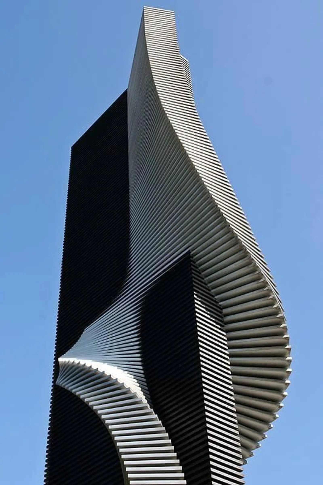
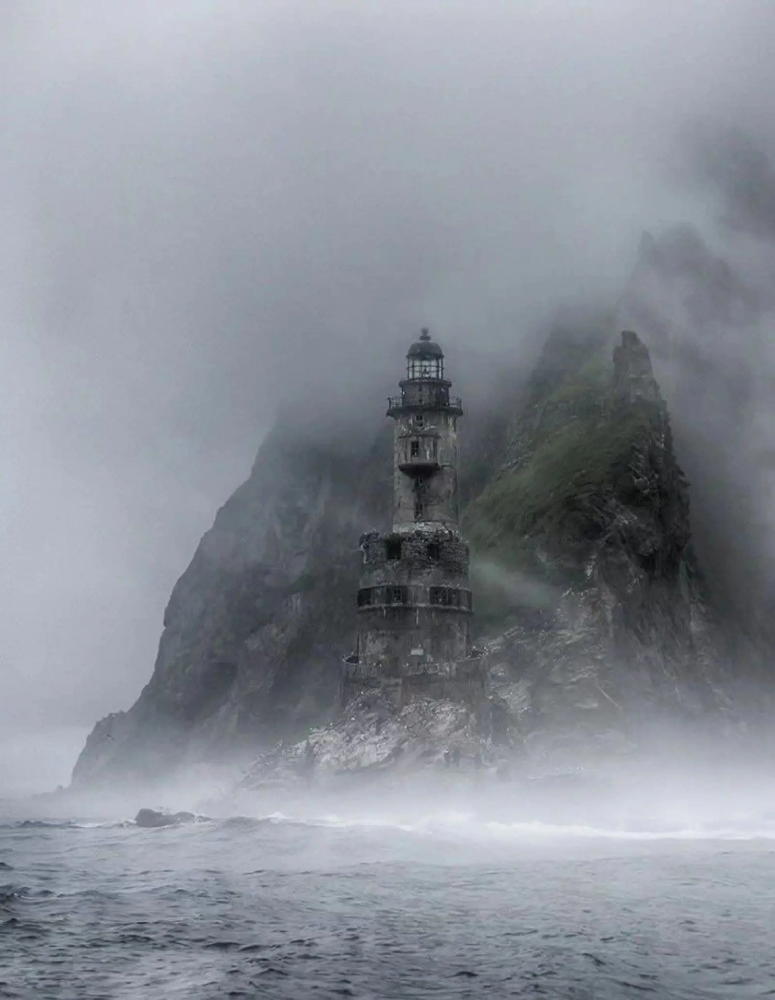

Design studio · Dhaka & remote
Quiet sites for brands that don’t need to shout.
We design identities, websites and small moments of motion that feel calm on the surface and alive underneath. Move your cursor — the page is a fluid.

Selected work
Four projects we still think about.
Our approach
We start from stillness. Most sites compete for attention; ours earn it with pace, space and one or two things done unusually well.
What we do
- 01
Identity
Wordmarks, type systems and colour that hold up at 16px and on a wall.
- 02
Websites
Hand-built or Framer. Fast, accessible, and tuned on real phones before launch.
- 03
Motion & WebGL
Shaders, fluid and particle systems that stay under budget and off your battery.
- 04
Art direction
Image, pace and tone for launches, films and campaigns.

“They made the site feel like our building — concrete, quiet, and somehow warm.”
Ana Rahman, Marrow Architecture
New projects, 2026
Let’s make something quiet.
Two or three projects a season. Tell us what it is and when it needs to exist.